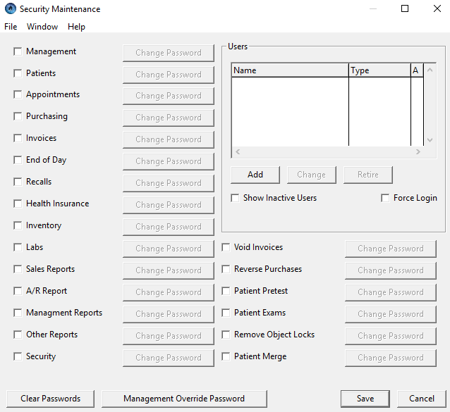

Security for OD Office Pro is handled through the ‘Management’ function, available on the Launchpad. Go to the ‘Office’ tab, and then click the ‘Security’ button.
There are two primary ways in which you can secure certain components of your data:
1. You can use component passwords
2. You can use User privileges.
There are a number of checkboxes on this screen. To secure an associated component, click the box, and provide a password when prompted. Once this is done, that component (ie. Security, Sales Reports, etc.) will no longer be available to anyone without providing the password.
You’re basically restricting access to certain sections of OD Office Pro, but on a function by function basis, not on a user basis.
Some interesting components, more fully explored.
| Patient Merge |
There may be instances where you’ve created two distinct patients for the same individual.
This function can be used to pull those two patients into one. Note that this cannot be undone, so use it cautiously. |
There are actually three different kinds of users, all of which can be managed at the top right
section of this same screen.
•Basic
•Secured
•Administrator
A ‘Basic’ User is a simple non-secured User, typically used to restrict client login (ie. when the client computer is first started). This allows you to prevent a non-staff member from starting up and accessing the program.
This type of User is also used to track activity (ie. booking appointment, making an invoice, etc), as well as booking in and out with the Time Clock feature.
This is the most commonly-used User type in all offices. It does not provide any security (other than inital login)...that is typically managed with Component Passwords.
A Secured User is more typically used in a side-by-side office, where the optical store needs access to the appointment book, but nothing else...and they do not want to have to enter passwords for every single component.
With this type of User, certain privileges are defined when the User is created (ie. Patients and Appointments). In this way, when a Secured User logs in, these are the only 2 components that are available. And no other passwords are required.
An Administrator is generally defined only for the doctor and possible office manager. This type of User has access to all features of the program, even if a Component Password has been set up.
We recommend that when first setting up the Users, that at least one Administrator is created first. You will then need to close the program, and start it up again, logging in as that Administrator.
Once an Administrator has been created, the program will no longer permit other users to be created, unless the Administrator is the one logged in. We do this to prevent others from creating their own User account, and setting their own privileges.
Finally, if you are going to fully use the User system, I suggest you click on the check box to ‘Force Login’ (this is just below the Users list). When checked, the program can not be accessed unless a valid User (of any type) logs in.
If left unchecked, it will permit "Anonymous login"...meaning anyone can start using the program by skipping the login step.
Mailing Address
Spinnakerware Inc.
12 Drury Crt.
Ancaster, ON
L9G 3V7
Toll-free
1-855-470-2556
Monday-Friday 9AM-6PM
Support support@spinnakerware.com
E-Mail info@spinnakerware.com